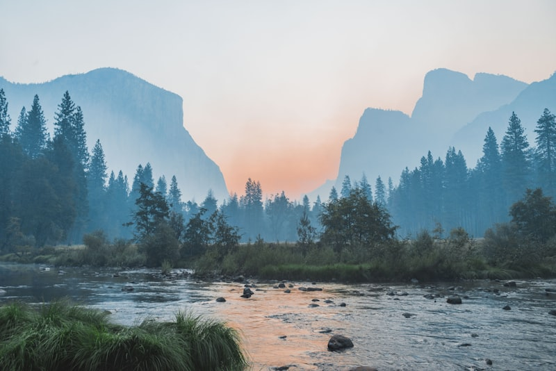

Gallery



")


Maiden's Tower image © Pixabay
The city where continents meet, history breathes, and beauty endures.
Istanbul, formerly Byzantium and Constantinople, is a city that has been the capital of three empires: Roman, Byzantine, and Ottoman. Its unique location on both Europe and Asia has made it a crossroads of civilizations for over 2,500 years.

Maiden's Tower image © Pixabay